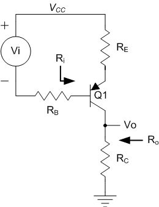

If the common-emitter current gain (Beta) for an NPN/PNP BJT in the forward-active region is equal to xxx, then what is the common-base current gain (alpha) for this transistor?
Common-Emitter current Gain:(Beta)If a MOSFET with W = xx um and L = xx um is biased in triode, what is the gate-to-source capacitance, Cgs, in femtofarads? Assume the gate dielectric is silicon dioxide with tox = xx angstroms.
Using Eox for SiO2 = 3.9
Mosfet based in Saturation:
gate-to-source capacitance, Cgs(Femtofarads):
gate-to-drain capacitance, Cgd(Femtofarads):
What is the transconductance, gm, in mA/V for an BJT operating in the forward-active region at 27deg C
Ic:(uA)What is the device transconductance, gm, in mA/V for a FET operating in saturation
Id:(uA)backgate transconductance(GMB) - nmos/pmos
Id: (uA)What is the back-gate transconductance, gmb, in mA/V for an MOS FET operating in saturation?
gmb: (mA/V)
What is the output resistance, rds, in kOhm for an MOS FET operating in saturation
Id:(uA)What is the base-to-emitter resistance, r*pi, in kOhm for an BJT operating in the forward-active region at 27deg C
Ic:(uA)What is the open-circuit voltage gain, uf, in V/V for an BJT operating in the forward-active region at 27deg C
Ic (uA)What is the collector-to-emitter resistance, ro, in kOhm for an PNP/NPN BJT operating in the forward-active region at 27deg C
Ic (uA)NMOS FET
Id(uA):BJT Biased with 4 Resistor
For the BJT bias circut shown, what is the emitter voltage(Ve) in volts?
Ve: (Volts)
For the BJT bias circuit shown, what value of Rc in kilohms is needed to allow the maximum possible peak-to-peak signal swing on the collector without clipping?
Rc: (kOhm)
For the BJT bias circuit shown, what is the base current, Ib, in microamps?
Ib: (uA)
MOS biased with 4 Resistor
For the MOSFET bias circut show, whant is the value of Rs in kohm
Rs: (kOhm)
BJT With 2 Resistors
For the BJT bias circut shown, what is the emitter voltage(Ve) in volts?
Ve: (Volts)
Due to Floats, this will output
MOSFET With 2 Resistors
this one has issues
For the MOSFET bias circuit shown, what value of Rd in kilohms is needed to allow the maximum possible peak-to-peak signal swing on the drain without clipping?
Rd: (kOhm)
For the MOSFET bias circuit shown, what is the source current, Is, in milliamps? Assume that the transistor is in the saturation region.
Is: (mA)
NPN Common Emitter(With Small Load)
What is the low frequency input resistance, Ri, in kOhm for the amplifier shown at 27deg C(Vt=26mV)
Low Frequency Input Resistance: (kOhm)
What is the low frequency output resistance, Ro, in ohm for the amplifier shown at 27deg C
Low Frequency output Resistance: (Ohm)
What is the low frequency voltage gain for the amplifier shown at 27deg C
Low Frequency Voltage Gain
What is the low frequency voltage gain for the amplifier shown at 27deg C, where Ro is between Q1 and Re
Low Frequency Voltage Gain
PNP Common Emitter(With Small Load)
What is the low frequency input resistance, Ri, in kOhm for the amplifier shown at 27deg C(Vt=26mV)
Low Frequency Input Resistance: (kOhm)
What is the low frequency output resistance, Ro, in ohm for the amplifier shown at 27deg C
Note: The Diagram is slightly incorrect for this variation. Vo and Ro are between Q1 and Re.
Low Frequency output Resistance: (Ohm)
What is the low frequency voltage gain for the amplifier shown at 27deg C **
Low Frequency voltage gain:
CD PMOS with RD_R Small Load
What is the low frequency output resistance, Ro, in ohms for the amplifier shown
Low Frequency Output Resistance, Ro: (kOhm)
CG_MOS_with_RG_R_load_small
What is the low frequency input resistance(Ri)
Ri: (Ohm)
What is the low frequency output resistance(Ro)
Ro: (kOhm)
What is the low frequency voltage Gain?
Gain: (V/V)
CB_BJT_with_RB_R_load_small
What is the low frequency input resistance(Ri)
Ri: (Ohm)
What is the low frequency output resistance(Ro)
Ro: (kOhm)
What is the low frequency voltage Gain?
Gain: (V/V)
Low Frequency Gain - Estimate
Estimate the maximum low frequency voltage gain for the amplifier shown:
Low Frequency Voltage Gain: (v/v)